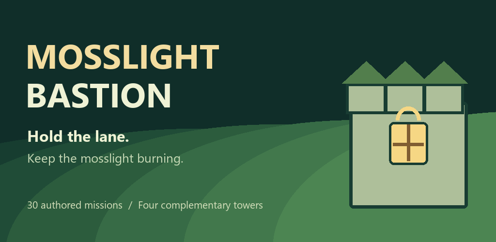

A little light. A wall worth holding.
Mosslight Bastion

Hold the lane. Keep the mosslight burning.
Play the Web editionHold the lane
Thirty authored defenses through six woodland regions. Read fixed routes, choose a glowing pad, and call each wave when you are ready.
Four towers, a thousand decisions
Quick archers, splash embers, slowing frost and armor-piercing prisms. Clear prices and counters make a little supply budget matter.
Grow a little bastion into a home worth defending
Keeper levels, campaign stars and lantern colors. A seven-day gift, daily quests, endless siege and a date-seeded defense keep free retries close at hand.
The keep has no king
It has gardeners, lantern keepers, and a low wall held together with patient hands. When the woodland grows restless, they light the lamps and mend the stone.
Web play
Full ordinary offline loop; no simulated native ad rewards. This source page expects the exported game at game/index.html. A local export must be supplied before this iframe works; no live deployment is claimed.
Behind the lantern
Godot4.5.1 Compatibility, portrait2D, deterministic20Hz combat. Local save with previous-valid backup. Android uses optional native services; backend configuration and device acceptance are owner work.
Future DLC concept: Winter Lanterns: twelve snow passes with shelter timing and cosmetic roofs. A concept only, not included or promised.